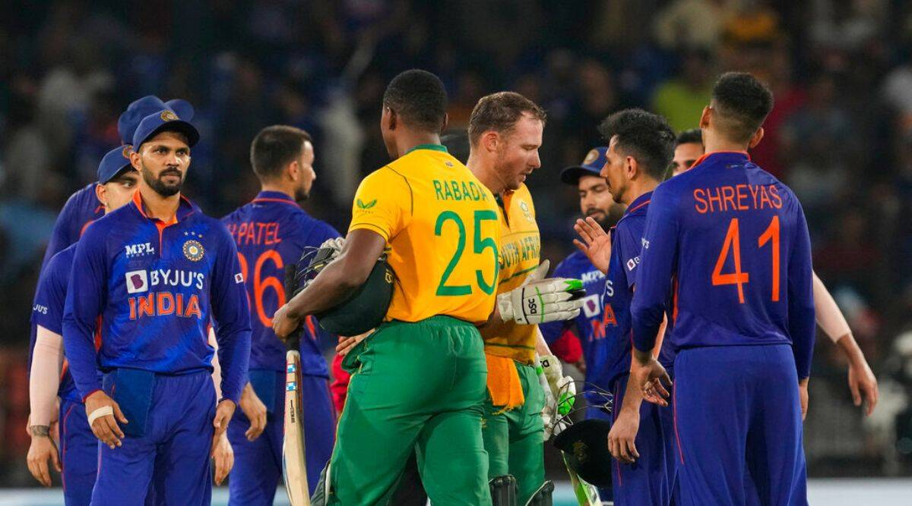

BAN VS NZ, 2nd Test
 172 & 144
172 & 144
 180 & 139/6
180 & 139/6
New Zealand won by 4 wickets
IND VS AUS, 5th T20
 160/8
160/8
 154/8
154/8
India won by 6 runs

IND vs SA: Match Preview – South Africa Tour of India 2022, 1st ODI.
India and South Africa are set to face each other in the 1st ODI of the ongoing South Africa tour of India 2022. The IND vs SA 1st ODI is scheduled to take place on October 6 (Thursday). The venue of the clash is Ekana Cricket Stadium in Lucknow. India recently defeated South Africa in the T20I series 2-1. India won the 1st T20I by 8 wickets and the 2nd T20I by 16 runs before losing the 3rd T20I by 49 runs. Suryakumar Yadav won the man of the series award in the series for his astonishing batting.

Women’s Premier League Auction 2024 Live Updates:
Punjab pacer Kashvee Gautam fetched a winning bid of Rs 2 crore from Gujarat Giants at the WPL auction here on Saturday The 20-year-old’s base price was Rs 10 lakh. Both Gujarat Giants and UP Warriorz bid for Kashvee before the former managed to secure her services for the second edition of WPL. In another big payday for an uncapped Indian cricketer, UP Warriorz bid Rs 1.3 crore for 22-year-old Karnataka batter Vrinda Dinesh.Both Vrinda and Kashvee had recently featured for India A in their three-match series against England A. In the early stages, Australian cricketers attracted the highest bids with all-rounder Annabel Sutherland being sold to Delhi Capitals for Rs 2 crore and batter Phoebe Litchfield to Gujarat Giants for Rs 1 crore. The 22-year-old Sutherland was released by Gujarat Giants after the inaugural edition of WPL held in March this year. She attracted bids from defending champions Mumbai Indians but they pulled out, with the player eventually going to the Capitals. Gujarat Giants went for the left-handed 20-year-old Litchfield who has made her debut across formats for Australia.

New Zealand to tour Bangladesh after a 10-year
The Bangladesh Cricket Board (BCB) has announced the itinerary for New Zealand's first visit to Bangladesh in ten years. As part of the tour, the two teams will face off in three One-Day Internationals (ODIs) and two Tests. The white-ball series would be crucial for both teams in their preparations for the big event. The tour's second leg consists of a two-match Test series that will be part of the current ICC World Test Championship cycle. The red-ball matches will take place in November and December, following the World Cup.